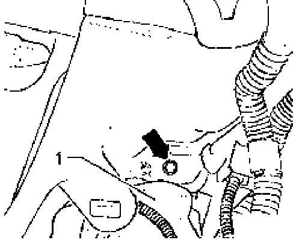
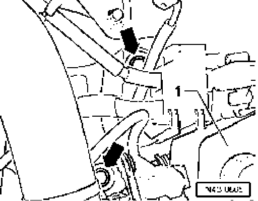
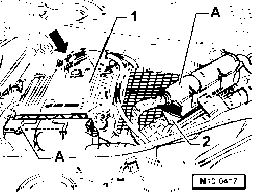
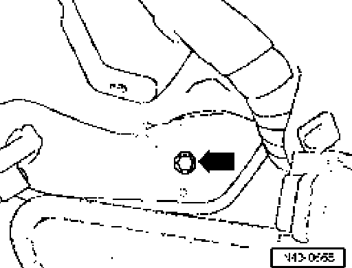
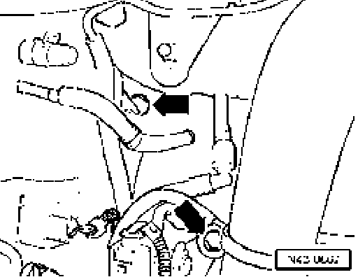
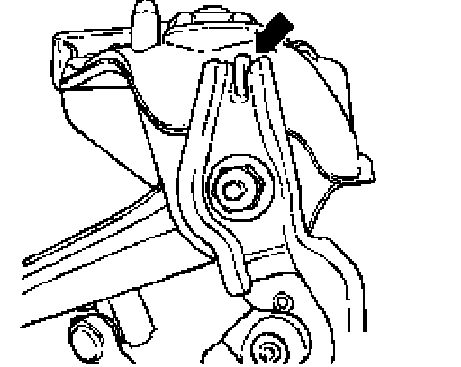

Strut Mount: Service and Repair
Removing left mounting bracket

- Disconnect bolt - arrow - under brake fluid reservoir - 1 -.

- Disconnect bolts - arrows - under hydraulic fluid reservoir -1-.
Removing right mounting bracket

- Unlock connector for engine control module - 2 - and pull it off.
- Remove engine control module.
- Remove retainer for engine control module - 2 -.
Bolts - 3 - for the mounting bracket are now accessible.

Remove bolt - arrow - -

Remove bolts - arrows - -
Continue for both sides
- Remove mounting bracket.
- Pull level control system sensor off upper control arm and unbolt it from mounting bracket.
Installing
Installation is reverse of removal, note the following:

The retainer for the level control system sensor must be against the nose of mounting bracket - arrow -
- Install mounting bracket.
Tightening torques
Mounting bracket to body 50 Nm plus an additional 1/4 turn (90°)
^ Use new bolts.
Upper control arm to mounting bracket 50 Nm plus an additional 1/4 turn (90°)
^ Use new bolt and nut.